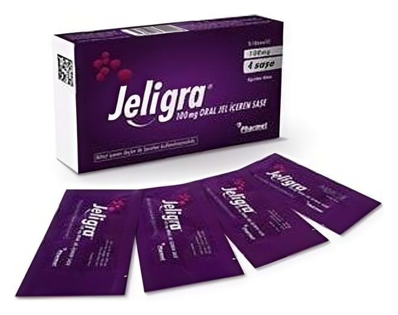

Jeligra 100 mg Oral Jel İçeren Saşe ,4 Saşe

Ne için kullanılır
KT · Bölüm 1• JELİGRA®100 mg sildenafil; pembe renkli, çilek aromalı jel içeren 4 adet alüminyum-PE folyo saşe içerisinde sunulmaktadır.
• JELİGRA®fosfodiesteraz tip 5 inhibitörleri adı verilen bir ilaç grubuna dahildir. Penisteki kan damarlarının gevşemesine yardımcı olarak cinsel uyarı sırasında kanın penise akımını sağlamak suretiyle etki gösterir.
• JELİGRA®yetişkin erkeklerde sadece cinsel yoldan uyarılma durumunda doğal yolla sertleşme (ereksiyon) oluşmasına yardım eder. Sertleşme sorununuz yoksa JELİGRA®kullanmamalısınız. Sertleşme sorunu, bir erkekte cinsel aktivite için gerekli, penis sertleşmesinin sağlanamaması veya sertliğin korunamamasıdır. JELİGRA®kadınların kullanımı için değildir. Bu ilacı kullanmaya başlamadan önce bu KULLANMA TALİMATINI dikkatlice okuyunuz, çünkü sizin için önemli bilgiler içermektedir. • Bu kullanma talimatını saklayınız. Daha sonra tekrar okumaya ihtiyaç duyabilirsiniz. • Eğer ilave sorularınız olursa, lütfen doktorunuza veya eczacınıza danışınız. • Bu ilaç kişisel olarak sizin için reçete edilmiştir, başkalarına vermeyiniz. • Bu ilacın kullanımı sırasında doktora veya hastaneye gittiğinizde doktorunuza bu ilacı kullandığınızı söyleyiniz • Bu talimatta yazılanlara aynen uyunuz. İlaç hakkında size önerilen dozun dışında yüksek veya düşük doz kullanmayınız.